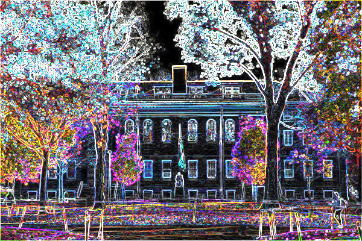
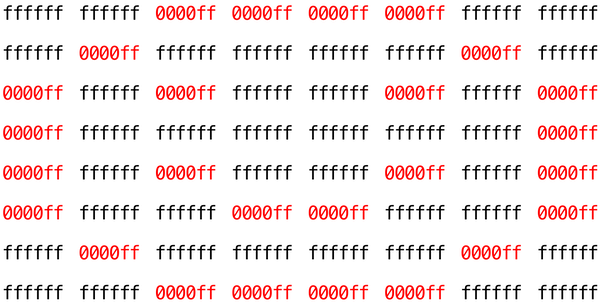
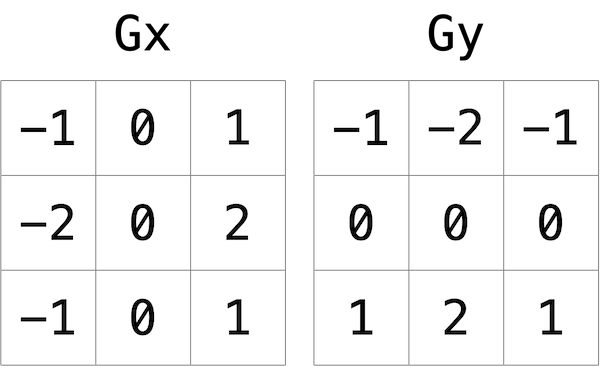

Filter

Problem to Solve
Perhaps the simplest way to represent an image is with a grid of pixels (i.e., dots), each of which can be of a different color. For black-and-white images, we thus need 1 bit per pixel, as 0 could represent black and 1 could represent white, as in the below.

In this sense, then, is an image just a bitmap (i.e., a map of bits). For more colorful images, you simply need more bits per pixel. A file format (like BMP, JPEG, or PNG) that supports “24-bit color” uses 24 bits per pixel. (BMP actually supports 1-, 4-, 8-, 16-, 24-, and 32-bit color.)
A 24-bit BMP uses 8 bits to signify the amount of red in a pixel’s color, 8 bits to signify the amount of green in a pixel’s color, and 8 bits to signify the amount of blue in a pixel’s color. If you’ve ever heard of RGB color, well, there you have it: red, green, blue.
If the R, G, and B values of some pixel in a BMP are, say, 0xff, 0x00, and 0x00 in hexadecimal, that pixel is purely red, as 0xff (otherwise known as 255 in decimal) implies “a lot of red,” while 0x00 and 0x00 imply “no green” and “no blue,” respectively. In this problem, you’ll manipulate these R, G, and B values of individual pixels, ultimately creating your very own image filters.
In a file called helpers.c in a folder called filter-more, write a program to apply filters to BMPs.
Demo
Distribution Code
For this problem, you’ll extend the functionality of code provided to you by CS50’s staff.
Download the distribution code
Log into cs50.dev, click on your terminal window, and execute cd by itself. You should find that your terminal window’s prompt resembles the below:
$
Next execute
wget https://cdn.cs50.net/2024/fall/psets/4/filter-more.zip
in order to download a ZIP called filter-more.zip into your codespace.
Then execute
unzip filter-more.zip
to create a folder called filter-more. You no longer need the ZIP file, so you can execute
rm filter-more.zip
and respond with “y” followed by Enter at the prompt to remove the ZIP file you downloaded.
Now type
cd filter-more
followed by Enter to move yourself into (i.e., open) that directory. Your prompt should now resemble the below.
filter-more/ $
Execute ls by itself, and you should see a few files: bmp.h, filter.c, helpers.h, helpers.c, and Makefile. You should also see a folder called images with four BMP files. If you run into any trouble, follow these same steps again and see if you can determine where you went wrong!
Background
A Bit(map) More Technical
Recall that a file is just a sequence of bits, arranged in some fashion. A 24-bit BMP file, then, is essentially just a sequence of bits, (almost) every 24 of which happen to represent some pixel’s color. But a BMP file also contains some “metadata,” information like an image’s height and width. That metadata is stored at the beginning of the file in the form of two data structures generally referred to as “headers,” not to be confused with C’s header files. (Incidentally, these headers have evolved over time. This problem uses the latest version of Microsoft’s BMP format, 4.0, which debuted with Windows 95.)
The first of these headers, called BITMAPFILEHEADER, is 14 bytes long. (Recall that 1 byte equals 8 bits.) The second of these headers, called BITMAPINFOHEADER, is 40 bytes long. Immediately following these headers is the actual bitmap: an array of bytes, triples of which represent a pixel’s color. However, BMP stores these triples backwards (i.e., as BGR), with 8 bits for blue, followed by 8 bits for green, followed by 8 bits for red. (Some BMPs also store the entire bitmap backwards, with an image’s top row at the end of the BMP file. But we’ve stored this problem set’s BMPs as described herein, with each bitmap’s top row first and bottom row last.) In other words, were we to convert the 1-bit smiley above to a 24-bit smiley, substituting red for black, a 24-bit BMP would store this bitmap as follows, where 0000ff signifies red and ffffff signifies white; we’ve highlighted in red all instances of 0000ff.

Because we’ve presented these bits from left to right, top to bottom, in 8 columns, you can actually see the red smiley if you take a step back.
To be clear, recall that a hexadecimal digit represents 4 bits. Accordingly, ffffff in hexadecimal actually signifies 111111111111111111111111 in binary.
Notice that you could represent a bitmap as a 2-dimensional array of pixels: where the image is an array of rows, each row is an array of pixels. Indeed, that’s how we’ve chosen to represent bitmap images in this problem.
Image Filtering
What does it even mean to filter an image? You can think of filtering an image as taking the pixels of some original image, and modifying each pixel in such a way that a particular effect is apparent in the resulting image.
Grayscale
One common filter is the “grayscale” filter, where we take an image and want to convert it to black-and-white. How does that work?
Recall that if the red, green, and blue values are all set to 0x00 (hexadecimal for 0), then the pixel is black. And if all values are set to 0xff (hexadecimal for 255), then the pixel is white. So long as the red, green, and blue values are all equal, the result will be varying shades of gray along the black-white spectrum, with higher values meaning lighter shades (closer to white) and lower values meaning darker shades (closer to black).
So to convert a pixel to grayscale, we just need to make sure the red, green, and blue values are all the same value. But how do we know what value to make them? Well, it’s probably reasonable to expect that if the original red, green, and blue values were all pretty high, then the new value should also be pretty high. And if the original values were all low, then the new value should also be low.
In fact, to ensure each pixel of the new image still has the same general brightness or darkness as the old image, we can take the average of the red, green, and blue values to determine what shade of grey to make the new pixel.
If you apply that to each pixel in the image, the result will be an image converted to grayscale.
Reflection
Some filters might also move pixels around. Reflecting an image, for example, is a filter where the resulting image is what you would get by placing the original image in front of a mirror. So any pixels on the left side of the image should end up on the right, and vice versa.
Note that all of the original pixels of the original image will still be present in the reflected image, it’s just that those pixels may have rearranged to be in a different place in the image.
Blur
There are a number of ways to create the effect of blurring or softening an image. For this problem, we’ll use the “box blur,” which works by taking each pixel and, for each color value, giving it a new value by averaging the color values of neighboring pixels.
Consider the following grid of pixels, where we’ve numbered each pixel.

The new value of each pixel would be the average of the values of all of the pixels that are within 1 row and column of the original pixel (forming a 3x3 box). For example, each of the color values for pixel 6 would be obtained by averaging the original color values of pixels 1, 2, 3, 5, 6, 7, 9, 10, and 11 (note that pixel 6 itself is included in the average). Likewise, the color values for pixel 11 would be be obtained by averaging the color values of pixels 6, 7, 8, 10, 11, 12, 14, 15 and 16.
For a pixel along the edge or corner, like pixel 15, we would still look for all pixels within 1 row and column: in this case, pixels 10, 11, 12, 14, 15, and 16.
Edges
In artificial intelligence algorithms for image processing, it is often useful to detect edges in an image: lines in the image that create a boundary between one object and another. One way to achieve this effect is by applying the Sobel operator to the image.
Like image blurring, edge detection also works by taking each pixel, and modifying it based on the 3x3 grid of pixels that surrounds that pixel. But instead of just taking the average of the nine pixels, the Sobel operator computes the new value of each pixel by taking a weighted sum of the values for the surrounding pixels. And since edges between objects could take place in both a vertical and a horizontal direction, you’ll actually compute two weighted sums: one for detecting edges in the x direction, and one for detecting edges in the y direction. In particular, you’ll use the following two “kernels”:

How to interpret these kernels? In short, for each of the three color values for each pixel, we’ll compute two values Gx and Gy. To compute Gx for the red channel value of a pixel, for instance, we’ll take the original red values for the nine pixels that form a 3x3 box around the pixel, multiply them each by the corresponding value in the Gx kernel, and take the sum of the resulting values.
Why these particular values for the kernel? In the Gx direction, for instance, we’re multiplying the pixels to the right of the target pixel by a positive number, and multiplying the pixels to the left of the target pixel by a negative number. When we take the sum, if the pixels on the right are a similar color to the pixels on the left, the result will be close to 0 (the numbers cancel out). But if the pixels on the right are very different from the pixels on the left, then the resulting value will be very positive or very negative, indicating a change in color that likely is the result of a boundary between objects. And a similar argument holds true for calculating edges in the y direction.
Using these kernels, we can generate a Gx and Gy value for each of the red, green, and blue channels for a pixel. But each channel can only take on one value, not two: so we need some way to combine Gx and Gy into a single value. The Sobel filter algorithm combines Gx and Gy into a final value by calculating the square root of Gx^2 + Gy^2. And since channel values can only take on integer values from 0 to 255, be sure the resulting value is rounded to the nearest integer and capped at 255!
And what about handling pixels at the edge, or in the corner of the image? There are many ways to handle pixels at the edge, but for the purposes of this problem, we’ll ask you to treat the image as if there was a 1 pixel solid black border around the edge of the image: therefore, trying to access a pixel past the edge of the image should be treated as a solid black pixel (values of 0 for each of red, green, and blue). This will effectively ignore those pixels from our calculations of Gx and Gy.
Specification
Implement the functions in helpers.c such that a user can apply grayscale, reflection, blur, or edge detection filters to their images.
- The function
grayscaleshould take an image and turn it into a black-and-white version of the same image. - The
reflectfunction should take an image and reflect it horizontally. - The
blurfunction should take an image and turn it into a box-blurred version of the same image. - The
edgesfunction should take an image and highlight the edges between objects, according to the Sobel operator.
You should not modify any of the function signatures, nor should you modify any other files other than helpers.c.
Understanding
Let’s now take a look at some of the files provided to you as distribution code to get an understanding for what’s inside of them.
bmp.h
Open up bmp.h (as by double-clicking on it in the file browser) and have a look.
You’ll see definitions of the headers we’ve mentioned (BITMAPINFOHEADER and BITMAPFILEHEADER). In addition, that file defines BYTE, DWORD, LONG, and WORD, data types normally found in the world of Windows programming. Notice how they’re just aliases for primitives with which you are (hopefully) already familiar. It appears that BITMAPFILEHEADER and BITMAPINFOHEADER make use of these types.
Perhaps most importantly for you, this file also defines a struct called RGBTRIPLE that, quite simply, “encapsulates” three bytes: one blue, one green, and one red (the order, recall, in which we expect to find RGB triples actually on disk).
Why are these structs useful? Well, recall that a file is just a sequence of bytes (or, ultimately, bits) on disk. But those bytes are generally ordered in such a way that the first few represent something, the next few represent something else, and so on. “File formats” exist because the world has standardized what bytes mean what. Now, we could just read a file from disk into RAM as one big array of bytes. And we could just remember that the byte at array[i] represents one thing, while the byte at array[j] represents another. But why not give some of those bytes names so that we can retrieve them from memory more easily? That’s precisely what the structs in bmp.h allow us to do. Rather than think of some file as one long sequence of bytes, we can instead think of it as a sequence of structs.
filter.c
Now, let’s open up filter.c. This file has been written already for you, but there are a couple important points worth noting here.
First, notice the definition of filters on line 10. That string tells the program what the allowable command-line arguments to the program are: b, e, g, and r. Each of them specifies a different filter that we might apply to our images: blur, edge detection, grayscale, and reflection.
The next several lines open up an image file, make sure it’s indeed a BMP file, and read all of the pixel information into a 2D array called image.
Scroll down to the switch statement that begins on line 101. Notice that, depending on what filter we’ve chosen, a different function is called: if the user chooses filter b, the program calls the blur function; if e, then edges is called; if g, then grayscale is called; and if r, then reflect is called. Notice, too, that each of these functions take as arguments the height of the image, the width of the image, and the 2D array of pixels.
These are the functions you’ll (soon!) implement. As you might imagine, the goal is for each of these functions to edit the 2D array of pixels in such a way that the desired filter is applied to the image.
The remaining lines of the program take the resulting image and write them out to a new image file.
helpers.h
Next, take a look at helpers.h. This file is quite short, and just provides the function prototypes for the functions you saw earlier.
Here, take note of the fact that each function takes a 2D array called image as an argument, where image is an array of height many rows, and each row is itself another array of width many RGBTRIPLEs. So if image represents the whole picture, then image[0] represents the first row, and image[0][0] represents the pixel in the upper-left corner of the image.
helpers.c
Now, open up helpers.c. Here’s where the implementation of the functions declared in helpers.h belong. But note that, right now, the implementations are missing! This part is up to you.
Makefile
Finally, let’s look at Makefile. This file specifies what should happen when we run a terminal command like make filter. Whereas programs you may have written before were confined to just one file, filter seems to use multiple files: filter.c and helpers.c. So we’ll need to tell make how to compile this file.
Try compiling filter for yourself by going to your terminal and running
$ make filter
Then, you can run the program by running:
$ ./filter -g images/yard.bmp out.bmp
which takes the image at images/yard.bmp, and generates a new image called out.bmp after running the pixels through the grayscale function. grayscale doesn’t do anything just yet, though, so the output image should look the same as the original yard.
Hints
- The values of a pixel’s
rgbtRed,rgbtGreen, andrgbtBluecomponents are all integers, so be sure to round any floating-point numbers to the nearest integer when assigning them to a pixel value!
Walkthrough
Please note that there are 5 videos in this playlist.
How to Test
Be sure to test all of your filters on the sample bitmap files provided!
Correctness
check50 cs50/problems/2025/x/filter/more
Style
style50 helpers.c
How to Submit
As it is now past 2025-12-31T23:59:00+00:00, you can no longer submit this problem!
Best to ensure you are visiting the latest version of CS50x, cs50.harvard.edu/x/2026, and submit the 2026 versions of problems from this point